Optimize your cooking&grocery
shopping experience.
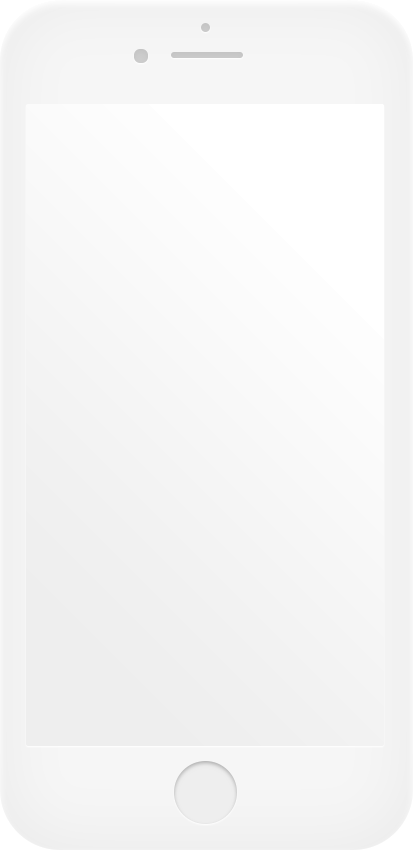

Chewy is a mobile app which can help people who cook manage their food and recipes. Features include tracking user’s grocery shopping and food storage, generating preferred menus based on purchases, generating shopping lists based on recipes for efficient food preparation, making meal plans, and recommending instructions for new dishes.
After conducting in-person interviews we ran an online questionnaire to identify potential areas of interested in users. We got 59 answers after a week and analysed the result.
SAMPLE QUESTIONS:
How long does it take for you to cook a meal on average?
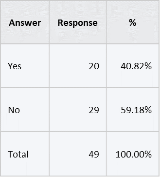Do you prepare meals for the week?
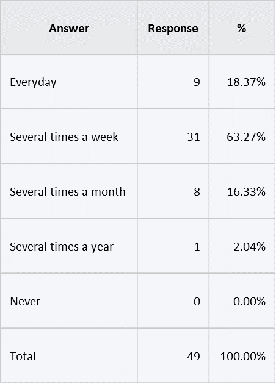How often do you cook?
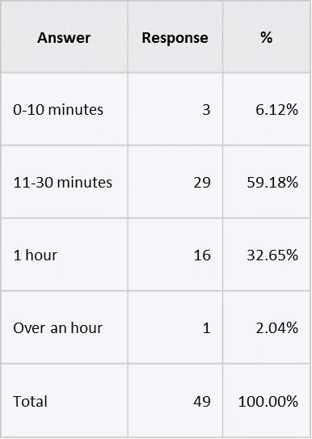For the most part, the results were predictable: users were very interested in having an application that allows searching for recipes. Users were disinterested in kid-friendly components, which seems reasonable given the population (convenience sample: iSchool students) that performed the questionnaire. Surprisingly, the results showed poor desire for social functions within the application. We suspected that this could be either due to: a genuine disinterest in the features, or misinterpretation of what the feature could actually look like for potential users.
13 people in total, including students and families
After collecting our raw contextual data, we organized the work activity notes based on direct quotes from the interviewees. The Work Activity Affinity Diagram (WAAD) was created as soon as we had completed the interviews. We had categorized the notes into clusters based on related themes that we identified from the interview data collected. Then we did a walk through of the Work Activity Affinity Diagram (WAAD) and extracted some representative work activity notes to develop requirements implied in the notes.
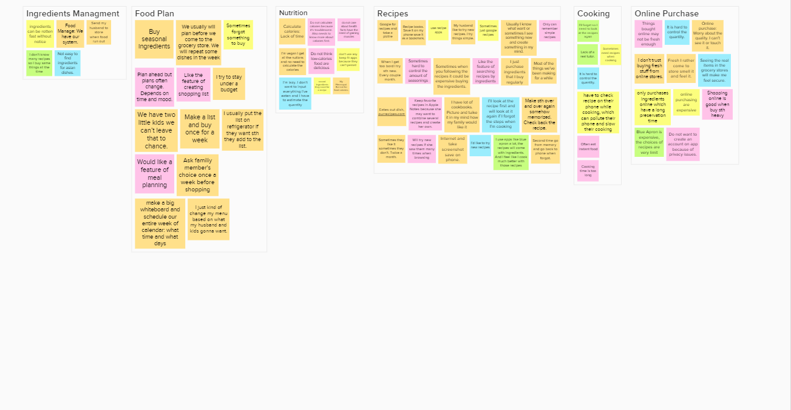Based on the interview results, we decided to target on two user groups. And we created two representative personas:
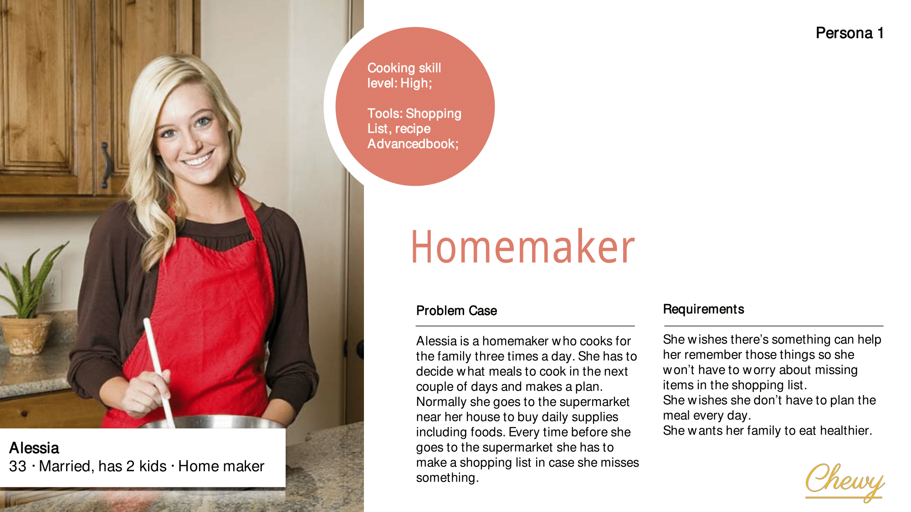 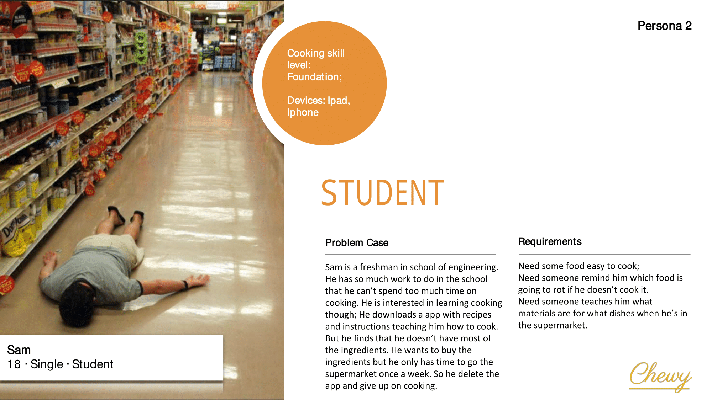Our journey map focuses on the character of Jamie. Here Jamie is presented as trying to plan a recipe that takes the dietary concerns of her friends into account. To do this she downloads Chewy in the app store. She was able to search for the most appropriate recipe and from that, generate a shopping list, and follow a step-by-step guide to create it.
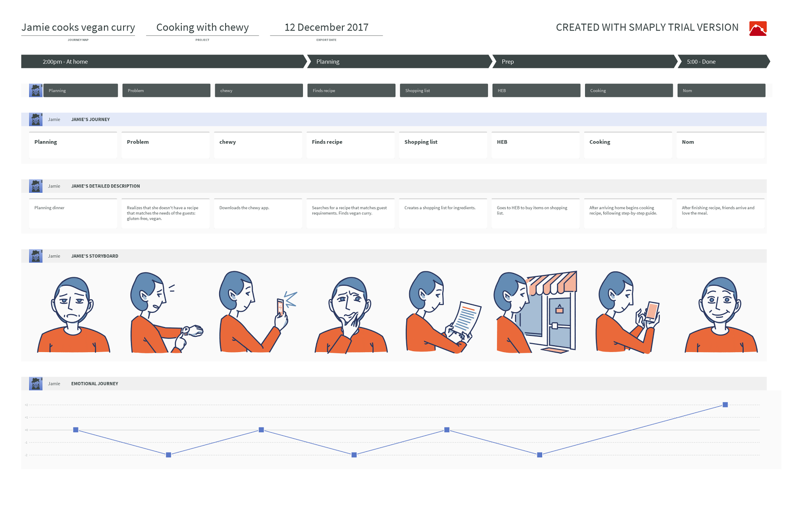Homepage
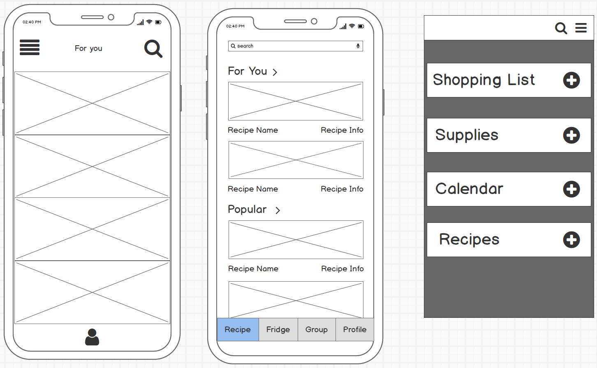We agree on having a homepage to show the main features to our users. Specifically, we decide to have fridge, meal plan and recipes in the homepage, because that’s what we want our users to see each time they open our app
Preferences
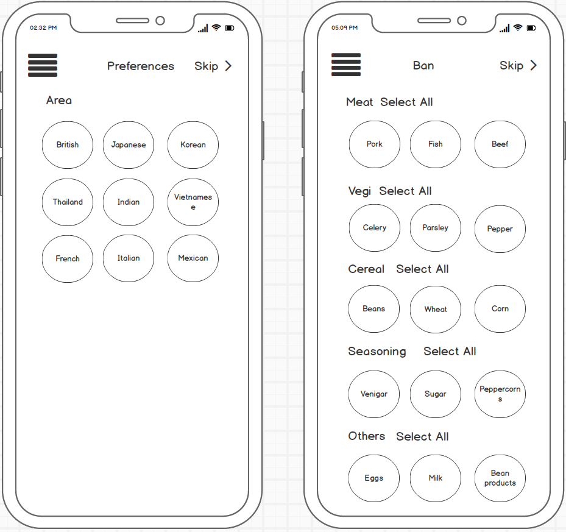 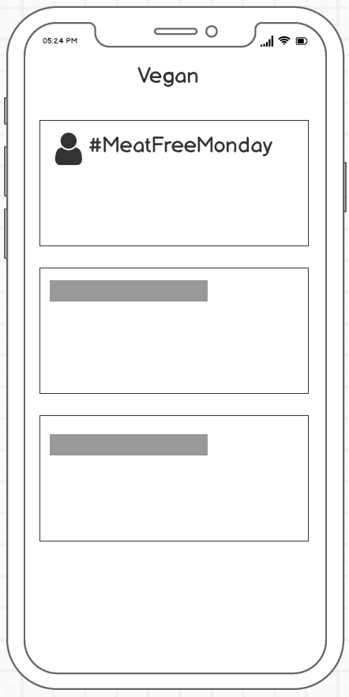Allow users to choose the food they like and do not like. Adding social features including groups and challenges.
Fridge
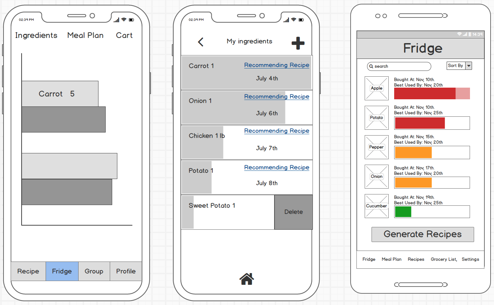 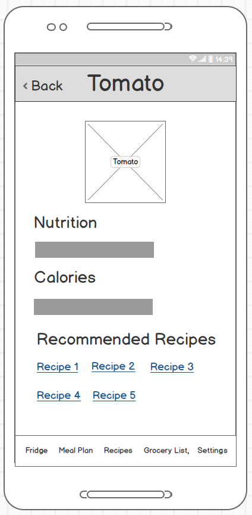A fridge page to show the groceries, their freshness and best used date. Use progress bar with colors. Provide nutrition facts and recommended recipes for each ingredient.
Meal Plannner
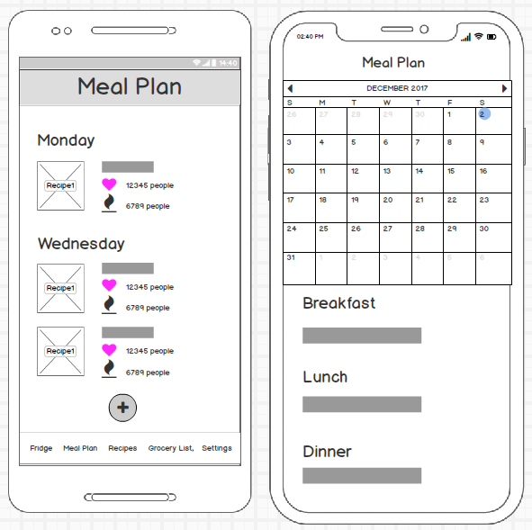A meal plan page to plan ahead. Allow users to check their weekly plan. Allow users to add meals to a specific day.
Recipes
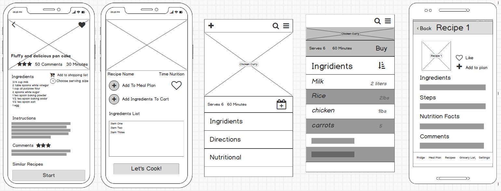A recipe page to provide ingredients and instructions. Enable voice control during cooking. Provide a timer for each step.
Shopping List
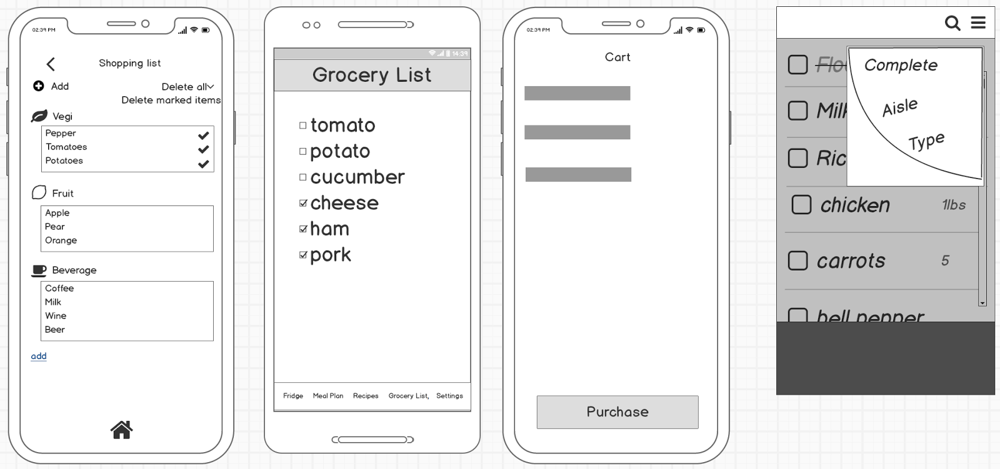Enable users to generate a shopping list according to recipes. Group items according to their category. Use icons to represent each category.
With the main functions been decided during our discussions about our low fidelity prototypes, we decided our information architecture and controlled vocabulary.
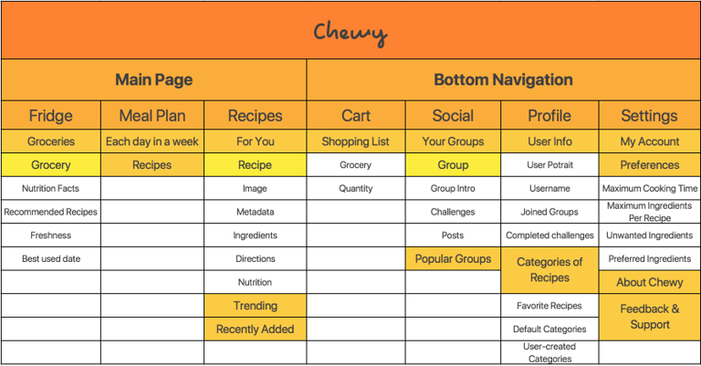 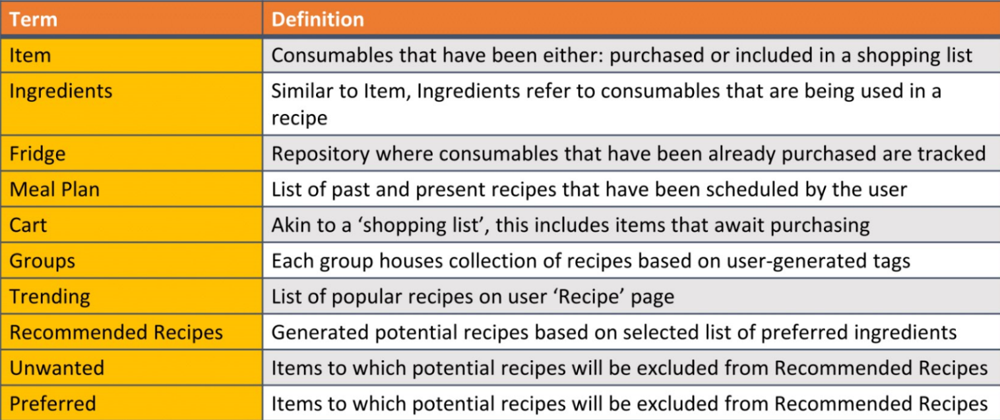